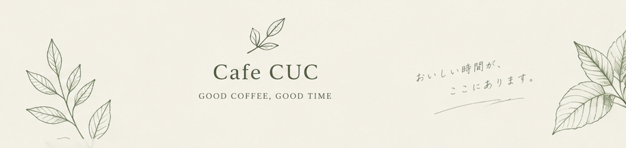

01 / OUR STORY

WHY CUC?
コーヒーと、ひと息と、心地よさ。
Coffee. Unwind. Comfort.
CUCは「Coffee」「Unwind」「Comfort」の頭文字から生まれた名前です。 一杯のコーヒーを楽しみ、忙しい日常から少し離れて、 気負わず自分らしく過ごしてほしい。そんな思いを込めています。
通勤・通学前の朝、友人と過ごす週末、一人で本を読む午後。 Cafe CUCは、特別な日だけではなく、 いつもの一日に寄り添うカフェを目指しています。
02 / OUR COMMITMENTS
CUCの5つのこだわり
01｜一杯ずつ丁寧に淹れるコーヒー
豆の個性に合わせて抽出方法を調整し、 香りや甘みを楽しめるコーヒーを提供。 苦味が強すぎない、毎日飲みたくなる味を大切にします。
02｜店内で焼き上げる自家製スイーツ
パウンドケーキやスコーンは店内で少量ずつ焼き上げます。 素材の風味を生かし、コーヒーと一緒に楽しめる甘さに仕上げます。
03｜自然素材を感じる空間
木目のテーブル、生成り色の壁、観葉植物を取り入れ、 落ち着いた空間を演出。自然光が入る窓際は、人気の特等席です。
04｜毎日食べたくなるフード
野菜の食感や素材の組み合わせを大切にした サンドイッチやプレートを用意。 軽い食事からしっかりしたランチまで選べます。
05｜ひとりでも居心地のよい場所
カウンター席や一人用のテーブルを設置。 読書や短時間のパソコン作業にも利用しやすく、 誰もが気兼ねなく過ごせる雰囲気を大切にします。
03 / YOUR TIME
店内での過ごし方
木目の家具や生成り色の壁、植物のある落ち着いた空間です。 カウンター席や窓際の席では、 読書や短時間の作業もお楽しみいただけます。
04 / FACILITIES
店内設備
無料Wi-Fi
ご利用いただけます。 接続情報はレジ付近に掲示しています。
コンセント
カウンターの一部席にあります。 利用できる席はスタッフにお尋ねください。
通話やオンライン会議は周囲へのご配慮をお願いします。 混雑時は長時間のご利用をお控えいただく場合があります。